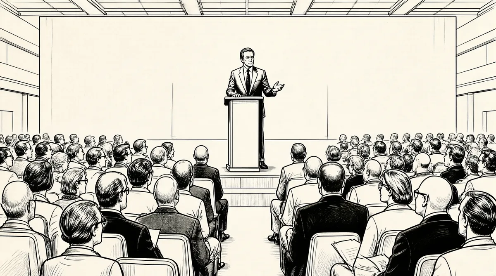

第30章 “喷气机”杰克

直到1967年，苏珊似乎还认为，如果沃伦放弃工作，他就会对她和家庭更加关心一些。在她看来，他们俩已经达成了共识，只要他挣够800万或者1000万美元，他就减少工作，好好过日子。1966年他收取的佣金为150万美元，再加上资本收益，巴菲特家的净资产已经超过900万美元。1她不懈地劝说他时间已经到了。但沃伦的步伐从未放缓，注意力不断地从一个项目转到另一个项目上：为合伙公司筹资，收购美洲国家火灾保险、桑伯恩地图公司、丹普斯特磨坊制造公司、伯克希尔–哈撒韦制造公司、霍克希尔德–科恩公司、美国运通公司，其间还有许多投资项目。当他坐飞机的时候，后背有时会变僵，偶尔苏珊还不得不照顾他几天，因为他由于疼痛而卧床不起。他的医生找不出任何具体的原因，只表示也许与工作或压力有关系。然而要他为了后背而停止工作，就如同要他为了健康而吃下一整盘西蓝花一样困难。
他总是坐在那儿全身心投入某件事情，看书、打电话，或者和迪克·霍兰德以及尼克·纽曼这样的朋友打桥牌或者扑克。尼克·纽曼是一个杰出的商人，拥有HinkyDinky杂货连锁店，这家店就是以前沃伦还是个小男孩的时候，爷爷让他去买面包，而他很羞愧地偷偷离开的那家店。纽曼和他的妻子在社区和民权界属于活跃分子，和低调的霍兰德夫妇一样，他们是巴菲特朋友中的典型。沃伦和苏珊与奥马哈的社交圈保持了距离。他们共同的社交生活是一系列跟随沃伦的工作节奏重复出现的事件，通常发生在他们旅行去看沃伦的朋友的时候。不过，在城里苏珊随时待命；她在朋友、家庭、有需要的事情以及社区工作中来回奔波。巴菲特家没有上锁的后门上悬挂着一个招牌，上面写着：“医生在里面。”经常可以看见苏珊的一两个“病人”在这所房子里闲逛。她的顾客们年龄不同，生活状态各异，其中有些人要求更多。他们有要求而她就会给予，如果他们要得多，她也就给得多。
苏珊提出要求的时候，沃伦会满足她；当苏珊要求更多时，沃伦也会顺从。除了对如何支配自己的时间不屈服外，沃伦几乎在其他任何事情上都对苏珊让步。这一年他们重新改造了房子，这已经是这个街区最大的一所房子了。在苏珊的指挥下，旧车库变成了房子的一翼，这样附近的孩子们可以有个房间聚在一起。沃伦也兴奋不已，因为地下室里有了一个自己的壁球场——大小类似于打乒乓球的场地所需，他可以带朋友或者生意上的同事一起来玩。
不过尽管巴菲特在很多方面像一个小孩，而苏珊希望他是个更关心孩子的父亲，他还是忠诚而专心的：他会在学校活动时露面，带孩子们去度假。1967年，“杰斐逊飞机”乐队的《白兔》和“甲壳虫”乐队的《佩珀军士孤独心俱乐部乐队》专辑的推出，标志着摇滚吸毒文化达到了顶点。此时苏茜上八年级，豪伊上六年级，而彼得才上三年级，巴菲特夫妇幸运地逃过了很多其他家长面临的烦恼。
苏茜已经从一个害羞的小孩成长为自立的少女，而且还成为她的弟弟无可争议的头儿。妈妈让整座房子充斥了民谣和黑人音乐，而她则唱歌、放唱片——苏茜已经变成了一个摇滚女孩；她还把飞鸟乐队和奇想乐队之类的组合介绍给弟弟们。她是个积极向上的孩子，在学校没被毒品污染。12岁的豪伊还太小，他化装成大猩猩躲在苏茜房间窗外的海棠树上，若隐若现，以此来吓姐姐和她的朋友们。不过，他的恶作剧变得更复杂，也更危险了。一次他把小狗放到房顶上，自己下楼，然后喊它看它是否下来。小狗果然下来了，摔断了一条腿，得到兽医那儿接受治疗。“我只是想看看它会不会跟过来。”豪伊还不肯认错。2妈妈拿他实在没办法，只能时不时把他锁在他自己的房间里；为了反抗，他从五金商店买了一把锁，反而把她锁在门外。彼得用很多时间弹钢琴，自己一个人弹或者和他的朋友拉尔斯·埃里克森一起弹。他在才艺表演中屡屡得奖，看起来，他沉迷于音乐和他父亲沉迷于挣钱是一样的。
在这个家里，有一个人被60年代充满迷幻的黑暗一面所引诱，就是苏珊姐姐多蒂17岁的儿子比利·罗杰斯，他是一个崭露头角的爵士吉他手，而且吸毒。他的母亲做一些志愿者工作，还是个专业女裁缝，不过她也会睡到中午才起床。她似乎没有能力作决定，而且有时看起来冷淡、说话不清楚，和她进行一次连贯的谈话几乎不可能。多蒂喝酒喝得更多了，而且根本不在意她的孩子们。苏珊经常带比利去找卡尔文·凯斯，后者是当地的爵士乐吉他手——这样比利可以从他那里学到一些技巧，而且也能努力让他改邪归正。3
她面临的任务令人畏惧，因为在那个时代里，关于LSD的毒品文化普遍存在。而由年轻人主导的反传统文化反抗一切形式的权威，包括过去几十年一直存在的任何东西。那个夏天，数十万嬉皮士在旧金山的海特－阿什伯里区漫无目的地乱转，有人说：“这再也不是艾森豪威尔时代的美国了。”这似乎解释了一切。4
而沃伦仍然生活在艾森豪威尔时代的美国。他从没有经历披头士的狂热。他不唱摇滚，不张贴上面写着“战争对孩子和其他生物不健康”的海报。他的意识形态保持不变。他的思想沉溺于严谨的哲学追求，在本杰明·格雷厄姆的“烟蒂”哲学和菲利普·费希尔以及查理·芒格的“大生意”之间取舍不定。
我正向查理·芒格的类型转变——有点儿反复。这有些像新教改革期间的情况。第一天我听从马丁·路德·金的，而第二天我又听教皇的。本杰明·格雷厄姆，理所当然，是教皇。
当芒格把他的论文钉在“烟蒂”大教堂的门上时，市场本身已废弃了过去和现在的所有权威。随着20世纪60年代的推进，闲聊股票让鸡尾酒会活跃起来，家庭主妇们会在美容院打电话给她们的经纪人。股票成交量上升了1/3。536岁的巴菲特在当今世界里就像一个头发花白的老人，现在的世界热切渴望着宝丽来、施乐、电子数据系统这样的公司——他根本不了解它们的技术。他告诉他的合伙人，他正在放慢速度。“我们可没有他们那么多好想法。”他写道。6
然而，巴菲特在寻找让资金保持运转的方式时并没有放宽标准，他规定了两个新的限制条件，这让他的投资变得更加困难。这些个人的偏好现在变成了正式的标准：
1.我们不会接手对我而言技术太难的生意，这是投资决策的关键。我对半导体和集成电路的了解就和对金龟子求偶习惯的了解一样少。
2.即使赢利预期可观，而如果主要的人的问题不令人满意，那么我们将不会在投资运作中采取行动。
他所说的“主要的人的问题”是指裁员、工厂关闭——以及不能容易罢工的工会。这也意味着他在每吸一个“烟蒂”之前，会思考一次、两次，甚至三次。
他拥有的“烟蒂”问题够多了。伯克希尔–哈撒韦现在是“靠设备维持生命”的状态，已经病入膏肓。巴菲特近期聘用了皮特·马威克审计事务所的维恩·麦肯齐，派他到新贝德福德监督这家破烂不堪的纺织工厂。巴菲特一直为他在最近一次伯克希尔–哈撒韦董事会上犯的错误而懊悔。因为财务成功而激动不已（但是这个成功后来证实只是短暂的）——“我们卖了几个月的人造丝衬里，挣了很多钱”。7——巴菲特被说服答应了每股派10美分的分红。这家公司的律师们争辩说，伯克希尔现在做得这么好，如果不分红就有可能被指控不合理地保留收入。也许是正在做白日梦或者只是由于一时的软弱，巴菲特同意了这次分配。一股派发10美分红利听起来很不起眼，可巴菲特花了24小时才认识到他们提出来的是一个谬论。但那时已经太迟了，他这一不寻常的应允给合伙人和股东们分了101733美元，而他知道这笔钱总有一天会变成数百万美元。8他永远也不会犯这样的错了。
8个月后，巴菲特给伯克希尔的股东们提供了一种交换方式。如果有人希望得到能产生收入的证券，他可以用股票来交换利率为7.5%的公司债。一共有32000股股票交上来了。通过这种方式，巴菲特把股东中希望得到收入的人清洗出去，这样可以确保剩下的股东们更可能关心公司的成长，而不是红利。“这种做法很聪明。”维恩·麦肯齐说。9当然，发行在外的股票越少，巴菲特就越能加强他对伯克希尔–哈撒韦的控制——即使他当初买这个公司的错误越来越清楚。肯·蔡斯不动声色地按照巴菲特的指示收缩业务。唯恐再次遇到像在丹普斯特出现的那种讨厌的结果，巴菲特听取了蔡斯的意见，好好安抚工会，忍受新贝德福德的人满意而由剩余的厂继续运作导致的损失。
到1967年，蔡斯和麦肯齐已经设法将这家不幸的男士西服衬里制造商拖回了“盈亏平衡”。不过，“通货膨胀”这个词——第二次世界大战以后就没走远——又一次挂在了每个人的嘴边。工资和原材料的价格像河里的淤泥一样不断上升，劳动力更便宜的国外和南方的纺织厂正在将伯克希尔的销售抽干。
巴菲特把信息传递给了他的合伙人：
伯克希尔–哈撒韦在纺织业务上正面临真正的困难。目前我不能预知潜在的任何损失，同样我也看不到运用在纺织业务上的这部分资产有好回报的前景。因此，我们这部分证券投资组合将严重拖我们相对绩效的后腿……如果道琼斯指数继续上涨的话。10
他试图尽可能快地把钱从纺织业里拿出来。对厂里即使最普通的决策，他也开始直接参与。几乎每一天他都要跟蔡斯和麦肯齐通电话。11因为来自进口产品的竞争，在1966年10月份的最后一周，蔡斯不得不关闭了梭箱织机分部，而6个月之前，巴菲特刚让他永久关闭罗得岛州的菲利浦国王D分部。该分部制造精纺棉麻布，大约占伯克希尔总产量的1/10。失去这450个工作岗位标志着罗得岛州棉布产业的终结。12巴菲特的底线是，“潮流趋势远比游泳的人更重要”。13
这还不够。巴菲特看到财务数据后认识到，衣物纺织分部和梭箱织机分部的损失巨大，拯救的唯一办法就是将设备现代化。不过在坏情况下往里砸钱是西伯里·斯坦顿犯下的错误。巴菲特拒绝投资，因为这样做只是杯水车薪。可是，关闭工厂将会导致数百人失业。他坐在桌子后面，旋转着椅子，将这个问题想了一遍又一遍。
具有讽刺意味的是，合伙公司现在就像在金钱的海洋里游泳一样。14在华尔街上，穿细条纹衣服的经纪人对钱开始变得兴奋。一些“二战”后出生的、脑子里没有危机感和大萧条教训的新人已经在这条街上出现。随着他们把股票推到前所未见的高价，巴菲特开始出售美国运通公司的头寸，现在这些头寸价值比当初买时花的1300万美元多出1500万美元，占合伙公司收入的2/3。不过，他不想把这些钱投回伯克希尔–哈撒韦。
相反，他这一年最重要的任务是在伯克希尔“严重拖累”他的业绩表现之前找到新办法，紧急拉住这匹垮掉的驽马。他已经关注奥马哈一家公司很久了，这家名为“国民赔偿”的公司总部离他在基威特大厦的办公室仅有几个街区。巴菲特在20世纪50年代初就见过公司的创始人杰克·林沃尔特，当时是在经纪商克鲁特顿公司的会议室里。林沃尔特是城里最聪明、最勇于进取的人之一。那时，沃伦的姑姑艾丽斯曾试图将林沃尔特带进巴菲特的合伙公司。15林沃尔特后来说，巴菲特要求最少的投资额是5万美元（尽管那时巴菲特从每个人那儿拿的钱远远少于这个数字）。“如果你认为我会让像你这样一个朋克小子掌管我的5万美元，那你就比我想象的还要疯狂。”林沃尔特大概是这样回复并且拒绝投资的。林沃尔特自视为一个投资专家，而且，沃伦喜欢保密这一点儿也把很多人拒之门外。16
虽然如此，巴菲特还是关注着国民赔偿公司。作为一个永不停歇的学习机器，他希望了解所有应该了解的有关保险业务的内容。他从图书馆借了很多书籍，开始了解林沃尔特的策略——为那些最难投保的客户们承保。巴菲特看到的林沃尔特是混合型的保险业从业者——谨慎的风险承受者，小气、富有进取心的保险商，每天晚上会到办公室转悠，关上所有的灯。17他以高昂的价格为那些不寻常的人保险：马戏团的表演者、驯狮员以及滑稽明星身体的某些部分。18“没有糟糕的风险，”林沃尔特喜欢说，“只有糟糕的费率。”他的第一次好机会是有一个银行要求他保证一个走私犯——推测已经被谋杀了——不会再返回奥马哈，因为他的妻子想继承他账户里的钱而不想等到法律规定的7年后。林沃尔特认为涉嫌谋杀的凶手的律师对这个失踪的走私贩是否活着应该非常清楚，他已经帮助被指控的嫌犯免于刑事责任，不过这位妻子（和银行）怀疑嫌犯是否真的清白。然而，这个律师并不能透露他的客户是否已经向他承认了罪行。于是林沃尔特让这个律师也在这个担保上投了些钱，因为他认为除非这个走私贩叫得比牛蛙还要响，否则律师不会愿意冒这个险。果然如此，钱说明了一切；走私贩再也没有出现，而银行也一直没有索赔。杰克·林沃尔特富有进取精神，而且天生擅长设置赔率。
从那时开始，他把业务扩张到为出租汽车承保，接着他又为电台寻宝游戏承保，他用口红这样的东西掩藏线索，自己把宝埋起来，让线索变得模模糊糊以确保只有一个奖品被申领。他很快成为奥马哈行动最快、名声最响、最有精力的生意人。他的女儿用听起来很形象的绰号“喷气机”杰克称呼他。他自己经营国民赔偿公司，还在数百只股票上买了少量头寸，分类账页上的潦草书写几近难辨：50股国家酿酒公司，2500股未成年人食品商业中心。他把大约数百张股票凭证放在健身包里。
20世纪60年代初，巴菲特给他在国民赔偿公司董事会的朋友查理·海德打过电话，问他林沃尔特是否有兴趣出售公司，海德的回答很有趣。
每年总有15分钟的时间，杰克想卖掉国民赔偿公司。有些事让他发疯。一些索赔或类似的事情会激怒他。于是查理·海德和我讨论了杰克每年15分钟这种现象。我还告诉他一旦他知道杰克正处于这个时期，就要通知我。
1967年2月奥马哈阴沉的一天，海德和林沃尔特在一起吃午饭。林沃尔特说：“我不喜欢这种天气。”整个交谈围绕着他想卖掉国民赔偿公司展开。林沃尔特已经觉得如果没有这个公司他能更好。15分钟的天窗打开了。“城里有个人也许想买，”海德说，“沃伦·巴菲特。”林沃尔特又听海德说了些巴菲特是如何感兴趣之类的话。然后海德打电话告诉巴菲特，杰克·林沃尔特也许会以几百万美元价格出售公司。“这几天你想和他见个面吗？”
“今天下午怎么样？”巴菲特立刻回答。林沃尔特第二天早上将要飞往佛罗里达州，可海德还是说服他先去一下基威特大厦。19
巴菲特请林沃尔特解释为什么他还没有将公司卖给任何人。林沃尔特说所有的出价都不如意。他开始摆出条件。他说他希望把公司留在奥马哈。因为感觉到15分钟打开的天窗就要消失了，巴菲特同意他不会搬走公司。
林沃尔特说他希望没有员工被解雇，巴菲特也答应了。林沃尔特又提出所有其他的报价都太低了。“你想要多少？”巴菲特问。“一股50美元。”林沃尔特回答。50美元已经超过了沃伦认为它的所值。不过他还是回答：“我接受。”
于是我们在15分钟内达成了交易。接下来，虽然已经完成了交易，可杰克真的不想这么干。不过他是个诚实的人，不会背信食言。但是，在我们握手以后他对我说：“我想你会想要审计过的财务报表。”如果我说是，他一定会说：“那太糟糕了，我们无法达成交易了。”于是我回应道：“我根本不想看到审计过的财务报表——它们最差劲了。”接着杰克又对我说：“我认为你会希望我把保险代理公司也卖给你。”
于是我们又像这样进行了三四个回合，最后杰克屈服了，把生意卖给了我，我知道他其实真的不想这么做。
巴菲特希望他这么做，因为伯克希尔–哈撒韦现在是个他已经部分清算了的差劲的公司，而这是他用这些钱来置换一个大生意的机会。他知道林沃尔特身处佛罗里达州，可能会经过重新考虑而改变主意，所以他想在林沃尔特改变主意之前快速签下合同。两人都只想要一份不超过一页纸的合同。20巴菲特迅速拟定了最后的文件，这笔钱也被存进了美国国民银行。21
当林沃尔特一周后从佛罗里达州回来，巴菲特已经准备就绪，就等着最后的文件签署了。可是在最后的各项程序交接、签署合同的会议上，林沃尔特迟到了10分钟。巴菲特和海德后来解释说，这是因为林沃尔特开车在街区转悠想找一个停车收费器。22林沃尔特总是说，那次就是迟到，没别的。但是，也许他已经意识到实际上没有了公司他也不会过得更好，因而磨磨蹭蹭，为自己产生没有国民赔偿公司而能过得更好的想法而难过。
巴菲特当然充分知道有了这家公司，合伙公司会更好；国民赔偿公司是给他的财富带来巨大推动力的机会。不久之后，他以一个无趣的名字“有关保险公司资本需求的思考”为题写了一篇文章。
“资本”这个词，也就是金钱，是巴菲特在收购国民赔偿公司时考虑的重要问题，因为资本是他的合伙公司的命脉。他从伯克希尔抽出资金，而这部分资金需要被重新投入使用。国民赔偿公司承受了很多风险，需要资本去支撑。“按照大多数标准，”他写道，“国民赔偿公司现在很难动它的资本。而伯克希尔–哈撒韦的富余资源能够让我们继续进取性地使用资本，从长期看，这样做会在国民赔偿公司产生最大的收益……如果承保业务令人失望，伯克希尔–哈撒韦还可以把另外的资本投入国民赔偿公司。”23
巴菲特已经想出一个完全崭新的生意类型。如果国民赔偿公司挣钱，他可以用这些收益购买其他公司或者股票，而不是放在国民赔偿公司的地下室里冬眠。不过如果狮子把驯狮人吃了，国民赔偿公司也许需要钱去支付给驯狮人的家属。而这些钱可以从别的业务那里回到国民赔偿公司。
把保险业务纳入伯克希尔–哈撒韦这个一团糟的纺织工厂，可以使它的资本达到体内平衡。它可以按照巴菲特的指令对环境做出内生的反应，而不是像一条蜥蜴，天气冷时冬眠，而阳光灿烂时就跑出来找块岩石晒晒太阳。
关键是要正确地给风险定价。因此，他需要杰克·林沃尔特跟着，不要走远。巴菲特付给林沃尔特丰厚的报酬，而且和他结交为朋友。就像联合零售公司有本杰明·罗斯纳一样，他买了一个由能干的经理人运营的出色的企业。
这两个人经常在加利福尼亚打网球。林沃尔特的着装品位和巴菲特相似，他会穿着他女儿为他织的旧毛线衫抛头露面。他那个生动的绰号“喷气机”杰克被拉长为巨大的字母覆盖在他肚子的部位。一次他和巴菲特在海盗旗饭店吃午饭，一个小孩走过来，问他：“你能为我签名吗，‘喷气机’杰克？”林沃尔特因此而沾沾自喜，这个孩子以为他是个名人——一个宇航员或者电影明星。也许除了小孩没人会那么想，因为他看起来根本不像那类人。但在他的心里，他仍然感觉就像是“喷气机”杰克。
理当如此，因为气质从人内在散发出来，而不是从他的外表。林沃尔特也许已经卖掉了他的公司，不过他已经拿回了一些属于他自己的东西——他用卖公司的一部分钱买了伯克希尔–哈撒韦的股票。24
[1]LSD，一种迷幻药的名称。——译者注